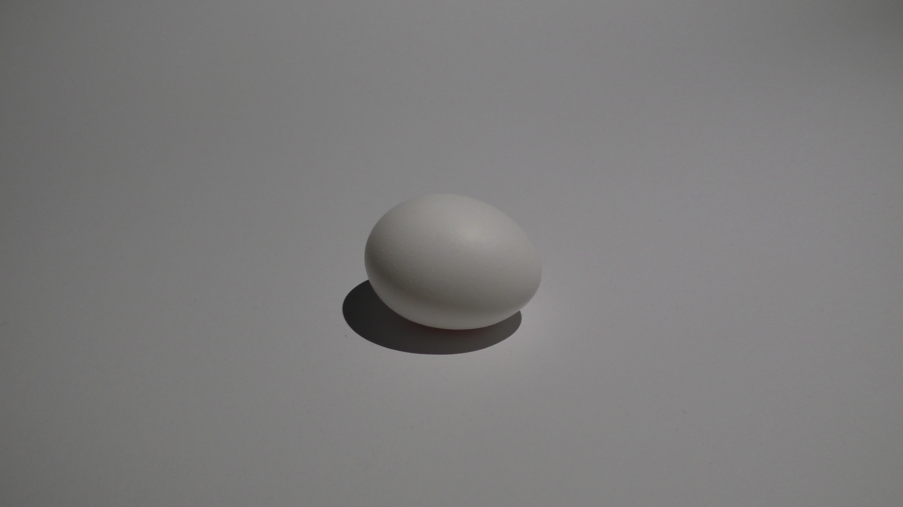
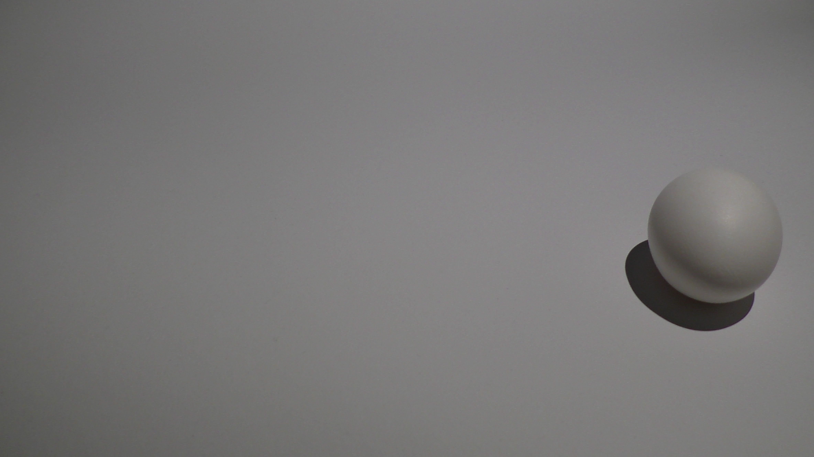
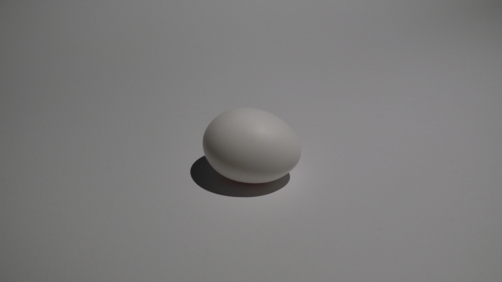
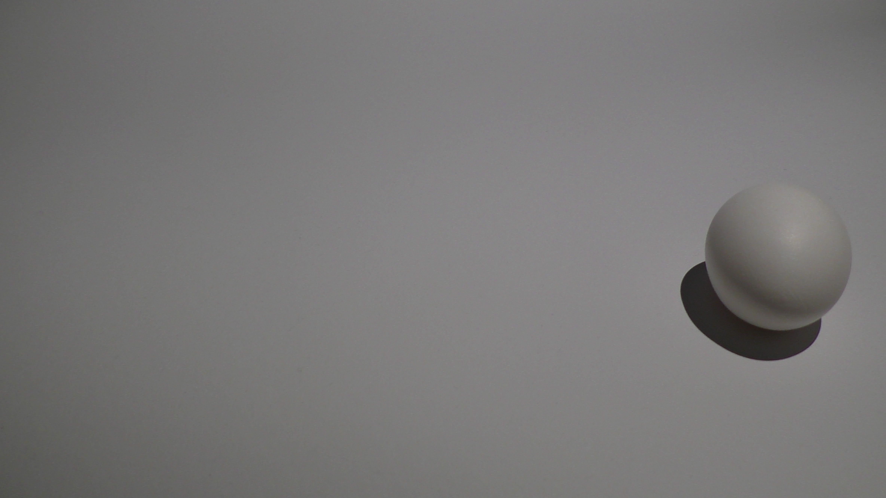

Einsendeaufgabe 2 - Das Ei
Beschreibung ansehen
Auch diese Bilder habe ich mit einer Panasonic HC-V757 geschossen. Eine zu erwähnende benutzte Einstellung ist der Weißabgleich, der verhindert, dass Bilder einen farbigen Stich erhalten.
Im ersten Bild (oben) habe ich eine Nahaufnahme vom Ei gemacht und habe mit Adobe Photoshop einen Schärfeeffekt verwendet um einen Punkt auf dem Ei zu erzeugen, den man schnell mit den Augen fixieren kann.
Im zweiten Bild (mitte) befindet sich das Ei im Zentrum des Bildes. Ich finde es wirkt dadurch sehr schlicht. Man kann sich dadurch auf den Schatten konzentrieren, die scharfen Kanten des Schattens, aber auch den Lichteinfall auf der gebogenen Oberfläche des Eies.
Im letzten Bild (unten) habe ich das Ei im rechten Drittel des Bildes platziert. Ich habe mich dafür entschieden um dem Ei etwas Raum zu geben, aber auch auch um davon abzulenken, dass es ein Ei ist. Ich fand hier die spherenartige Gestalt des Eies interessant und, dass es, aus diesem Winkel betrachtet, mehr wie eine Kugel als ein Ei wirkt.
 


